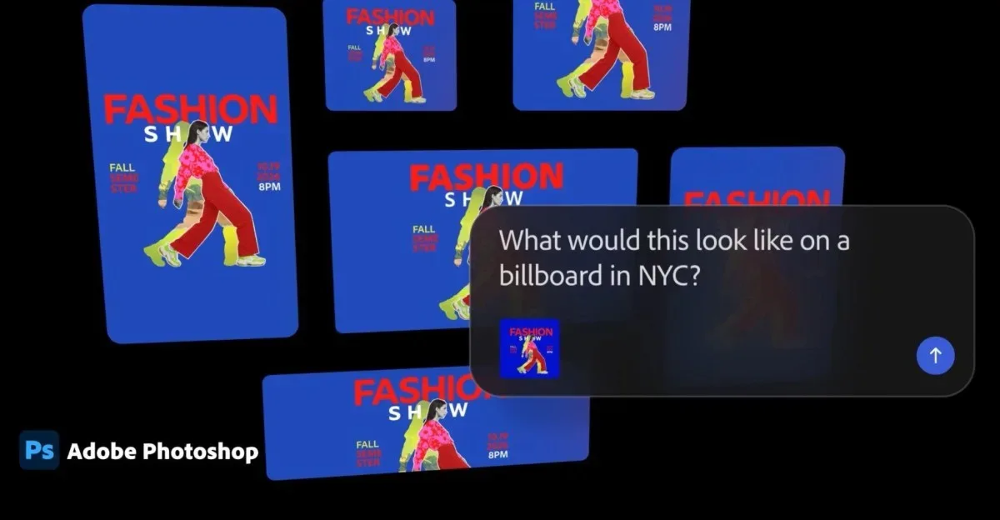
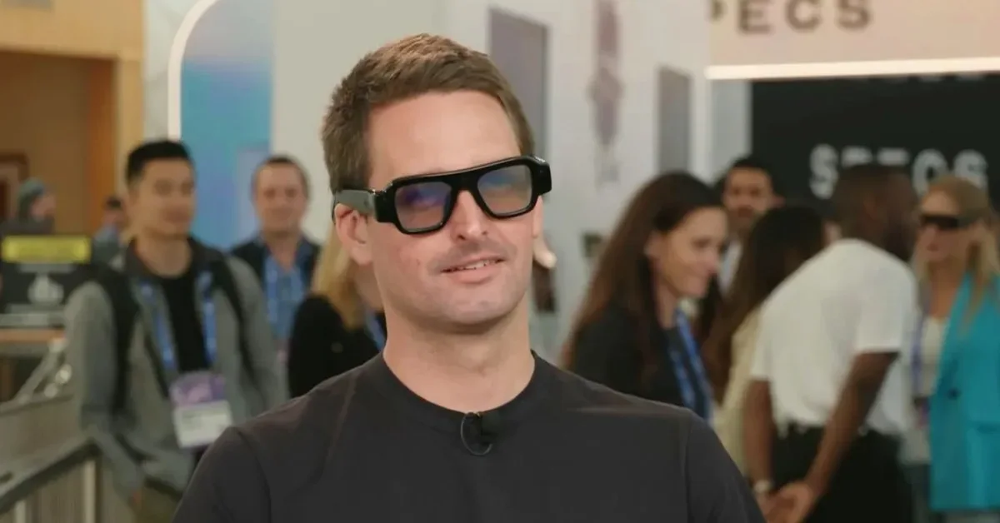
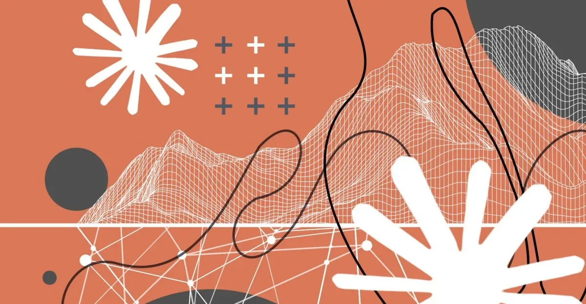
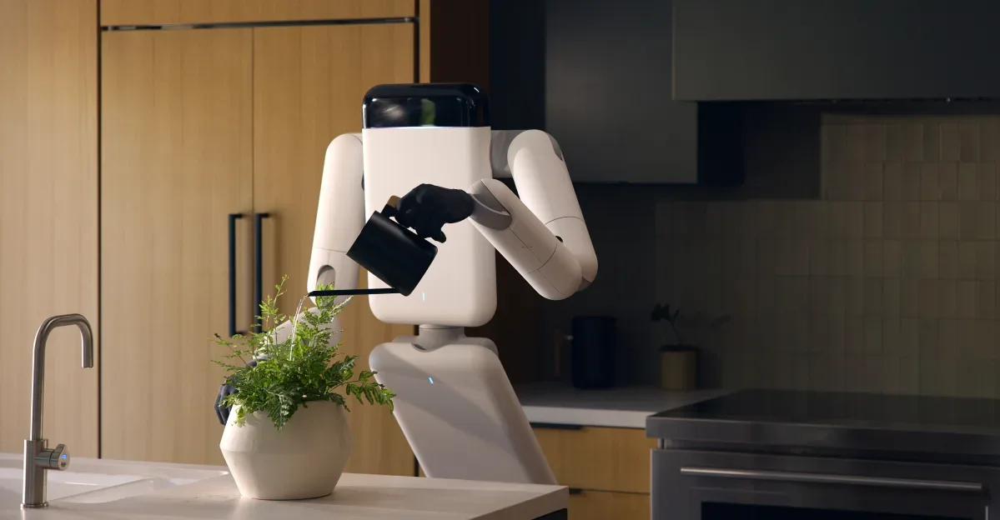

Индустрия
Голливудские студии отказываются от фильма о Сэме Альтмане на фоне инвестиций в OpenAI
Голливуд избегает критики Big Tech: студии отказываются от фильма о главе OpenAI из-за инвестиций в ИИ
The Verge AI
24 июн.Материалы из источника The Verge AI.
45 материалов
Голливуд избегает критики Big Tech: студии отказываются от фильма о главе OpenAI из-за инвестиций в ИИ
Google Home станет точнее: распознавание по одежде и звукам на видео — обновление с 23 июня

Midjourney переключилась с генерации изображений на медицинские сканеры — но эксперты сомневаются в заявленных возможностях.

Meta отказалась от Ray-Ban ради снижения цены на умные очки

Sony оснастила Xperia 1 VIII ИИ-ассистентом, который пытается «улучшить» ваши фото — и почти всегда портит их

Nvidia обещает почти нулевое потребление воды в ЦОД Rubin за счёт жидкостного охлаждения и температуры 45 °C.

ИИ-меблировка квартир: как риелторы экономят на съёмках, а арендаторы теряют время

Проект-менеджер запустил сайт с помощью ИИ, а через месяцы обнаружил SQL-инъекцию. Это лишь одна из тысяч похожих историй.

Журналисты собрали датасеты с Lady Gaga и Radiohead – проверьте, чья музыка попала в тренировку ИИ
Amazon MGM отказалась от фильма о Сэме Альтмане с Эндрю Гарфилдом — студия ищет нового дистрибьютора.
Глава корпоративных продаж OpenAI ушёл во второй раз — и снова неожиданно
Adobe обновляет Firefly: единый ИИ-интерфейс с памятью проектов и новыми возможностями редактирования

Adobe добавила ИИ-ассистентов в Photoshop, Premiere, Illustrator, InDesign и Frame.io — они помогают с рутинными задачами.
Anthropic сама добивалась регулирования ИИ — и первой попала под удар. Что случилось с Fable 5

Amazon расследует дело трёх инженеров, выступивших против дата-центров на слушаниях горсовета Сиэтла

Midjourney представила ультразвуковой сканер всего тела — от «картинок с котиками» до медицинского оборудования.

Новые Snap Specs весят 132 г и стоят $2 195 — почему обозреватели сомневаются в успехе
Белый дом отключил модели Anthropic — и никто не знает точно, почему. Разбираем версии
63% американцев считают, что ИИ развивается слишком быстро — данные нового опроса Pew Research Center.

Трамповские экспортные ограничения впервые затронули ИИ-модели: Anthropic пришлось отключить Mythos 5 и Fable 5 для всех иностранцев.

Google Home Speaker с Gemini — предзаказы сегодня, старт поставок 25 июня за $99

Meta внедрила ИИ-поиск по постам Facebook: полезные советы и галлюцинации в одном флаконе

Робот без головы и ног от стартапа Эрика Шмидта: зачем он нужен и когда появится

GPU на 60% быстрее, NPU до 160% — Qualcomm показала чип для следующего поколения умных очков.

SpaceX потратит $60 млрд на ИИ-редактор кода Cursor — чтобы догнать OpenAI и Anthropic

Трамп едва не заблокировал флагманские модели Anthropic — что стоит за 90-минутным ультиматумом

Meta внедрила в Facebook поиск с ИИ, который отвечает на вопросы, анализируя публичные посты пользователей.

Лоббисты Big Tech ищут последний шанс на федеральное регулирование ИИ, привязывая его к детской безопасности.

Отключение Anthropic Fable 5 и Mythos 5 по требованию США подстегнуло гонку суверенного ИИ в Европе, Канаде и Китае.

Правительство США обязало Anthropic отключить новейшие ИИ-модели Fable 5 и Mythos 5 для иностранцев.